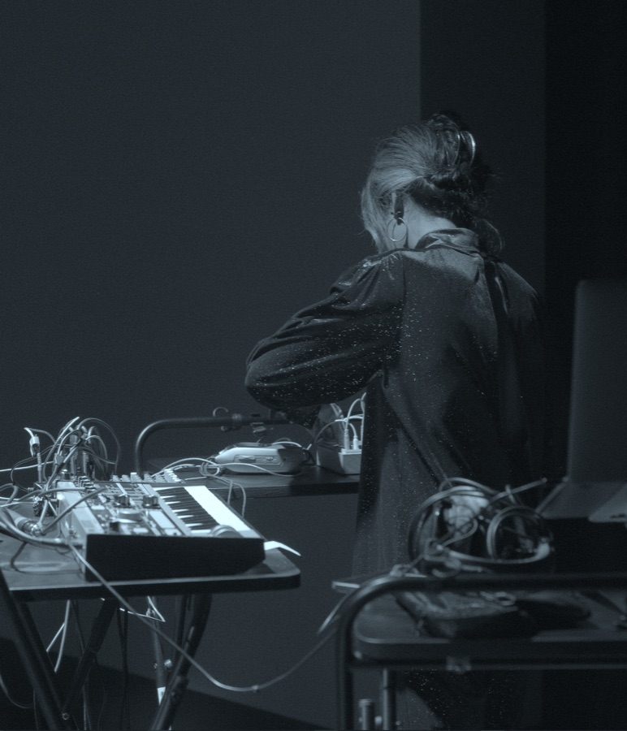

Mina
김민아(Mina Kim)는 미디어아티스트이자 예술-연구자로서 한국과 네덜란드를 오가며 작업을 발표해왔으며, 현재는 서울을 기반으로 활동하고 있다. 디지털 기술 발전의 뒤에 남겨지는 것들에 관심이 많고, 디지털의 잔해와 인간이 공존하는 더 나은 방안을 예술의 장을 통해 연구하려 한다. 디지털 기술을 이루는 물질적 기반을 환경적 관점에서 바라보는 예술-연구를 진행 중이며, 환경적으로 지속가능한 예술 창작 및 수행 방법을 개발하는 데 관심이 많다. 설치, 영상, 웹, 사운드, 퍼포먼스, 워크숍, 진(zine) 등 다양한 매체와 표현방식을 통해 작업을 발표한다.
네덜란드의 TEC ART, SIGN 갤러리와 NP3에서 작품을 발표한 적 있으며, Sonic Acts에서 워크숍을 여러 차례 진행하였다. 한국의 Unfold X, SAPY, PowerPlant 등에서 전시 작품을, WeSA, 닻올림, 뉴 뮤직 인 제주, 아트코리아랩 등에서 사운드 퍼포먼스를 선보였다. 일민미술관, 서울시립미술관, 청년예술청, 서울문화예술교육센터 용산 등에서 워크숍을 진행하였다.
비타미나(Vitamina)라는 이름으로 사운드 작업을 하기도 하며, 다양한 소리들을 실험하며 함께 놀고 배우는 데 관심 있는 여성과 퀴어를 위한 커뮤니티인 ‘레지스터 코리아(Re#sister Korea)’ 활동을 2022년부터 이끌어 오고 있다.